GHJU et LYLU conservent leurs finitions rose et bleu nacré. Leurs protections deviennent plus complètes, avec dix paliers qui ajoutent de vraies pièces : abdomen segmenté, bras enveloppants, cuissards, module dorsal, exosquelette et capteurs. Les gants approuvés et les mouvements RLH restent présents.
Une tenue de départ complète : casque fermé, col, torse et protection du bassin. L’armure garde ses gants actuels.
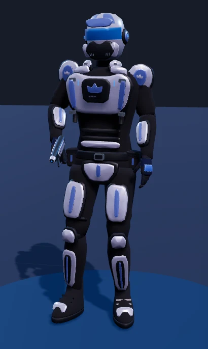
LYLU · niveau 1
Même châssis de départ, proportions propres à LYLU, métal bleu nacré et combinaison technique sombre.
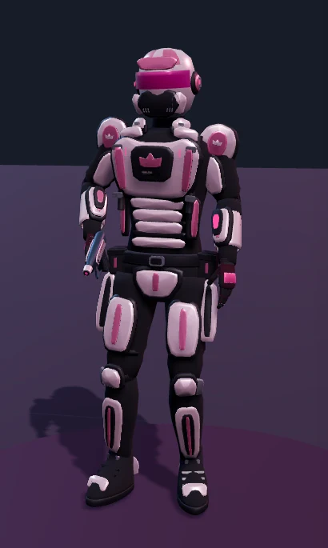
GHJU · niveau 5
Abdomen en trois lamelles, biceps protégés, coques d’avant-bras et renforts latéraux aux cuisses et aux genoux.
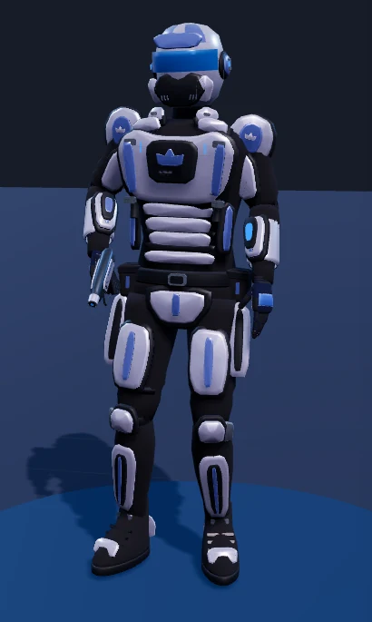
LYLU · niveau 5
Les protections restent séparées aux coudes, aux genoux et aux poignets. Chaque élément suit son segment du squelette.
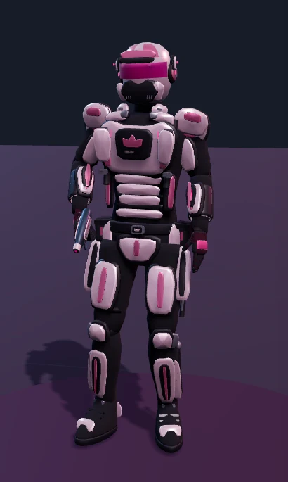
GHJU · niveau 10
Épaulières à couches, capteurs, renforts pectoraux et déflecteurs de hanche complètent la silhouette.
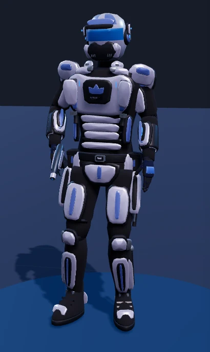
LYLU · niveau 10
Le même équipement militaire complet, avec rails et actionneurs des jambes et protections d’assaut.
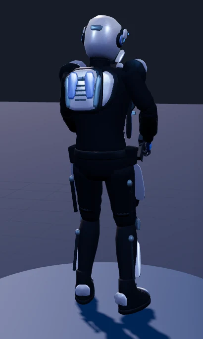
Un module dorsal compact
Énergie, ventilation, marquage de série et renforts. Le bloc reste fixé au torse pendant les animations.
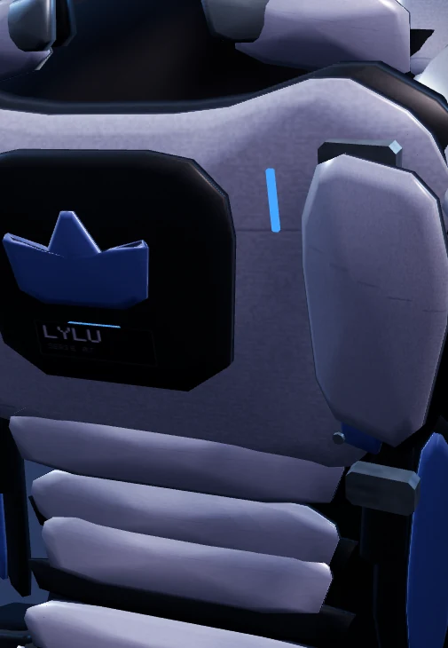
Surfaces et assemblages
Coques galbées, grain métallique, nom du héros et marquages. Les inscriptions sont incluses dans l’atlas local de l’armure.
Captures du vrai atelier 3D. L’Arène débloque un palier par vague jusqu’au niveau 10 ; le niveau narratif 1 garde son équipement de départ. Tous les paliers se comparent avec le curseur de l’atelier. Sept lots de rendu par armure. Vérifications en navigateur et iPhone simulé, sans essai sur matériel physique.
Historique · 3.44
VERSION 3.44 · MÉTAL NACRÉ / VISÉE / SYNTHÉTIQUES
Vesper reprend le courant.
GHJU et LYLU gagnent leurs finitions métalliques nacrées. Les lunettes offrent de nouveau une vue claire et grossie. Le synthétique N-08 utilise les murs pour alterner abri et tirs. Les anciens ordinateurs retrouvent du courant au milieu des câbles et des installations endommagées.
Métal rose sous vernis nacré, plaques galbées et bords adoucis. Les gants et le squelette RLH sont conservés.
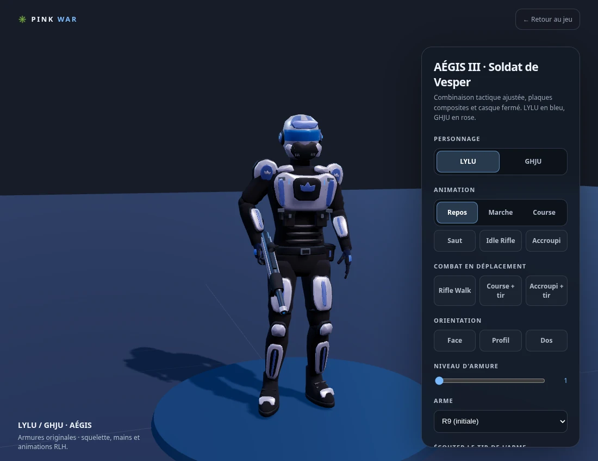
LYLU · nacre bleue
Même finition sur l’armure bleue, avec tissus sombres, mécanismes contrastés et casque fermé.
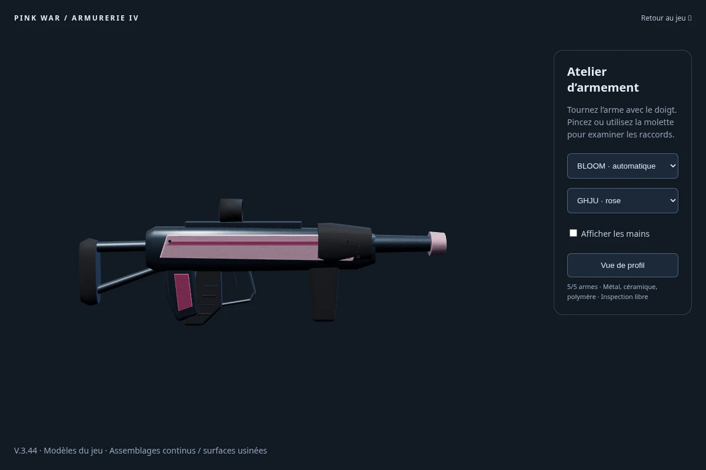
Les armes de GHJU
Carénages nacrés roses, métal sombre et polymère. Les biseaux sont plus doux, les prises en main inchangées.
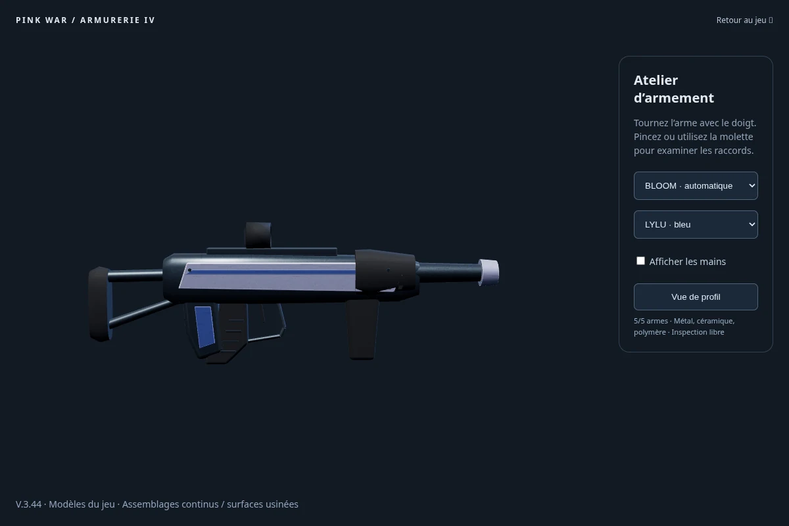
Les armes de LYLU
Les cinq modèles suivent aussi la palette bleue. Les canons et les ancrages restent alignés sur les tirs et les mains.
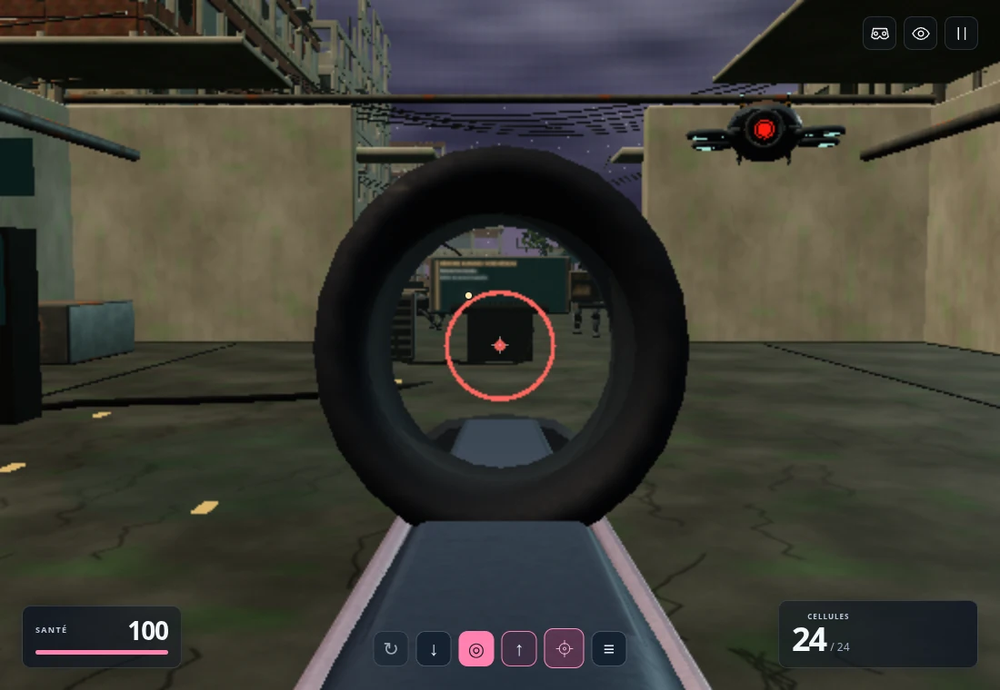
BLOOM · visée ×2
Le logement optique est réellement ouvert. Le réticule se voit à travers une lentille transparente, avec le zoom sur écran ou dans la lunette en VR.
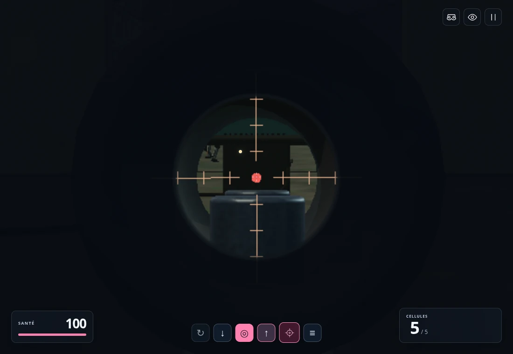
LANCE · visée ×4
Tube ouvert, oculaire aligné à l’œil et réticule gradué. La VR conserve le champ de vision et la pose réels du casque.
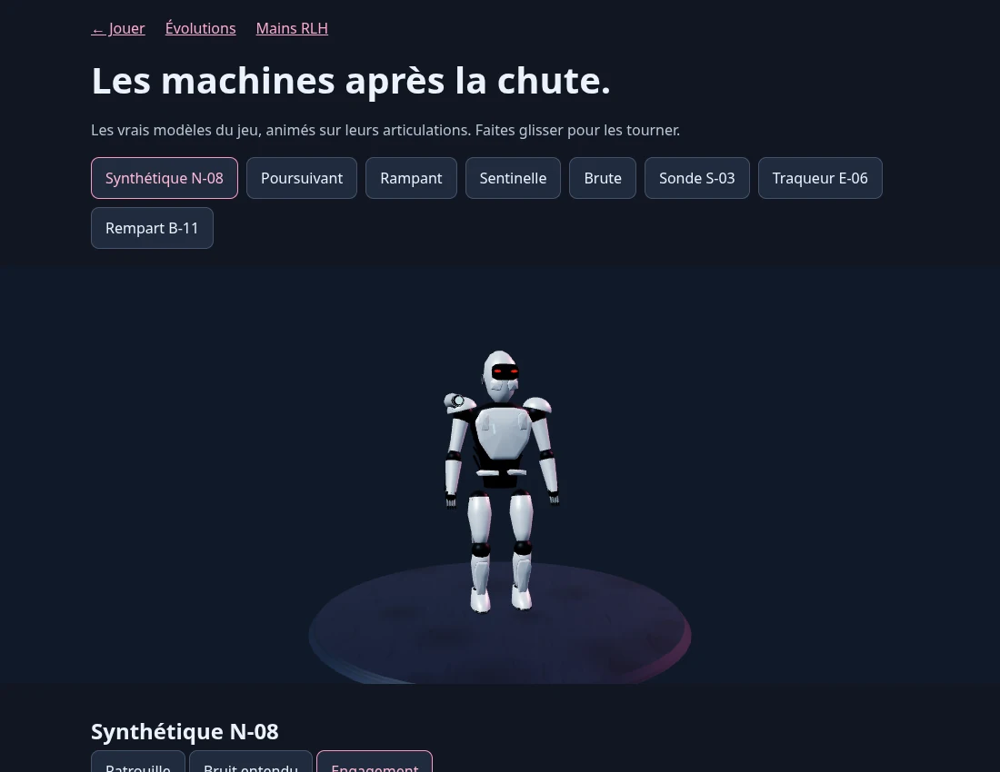
N-08 · synthétique tactique
Un nouveau châssis civil réquisitionné par ORDRE : coque claire, tendons mécaniques et capteurs rouges en alerte. Il attend à couvert, sort pour tirer, puis se replie.
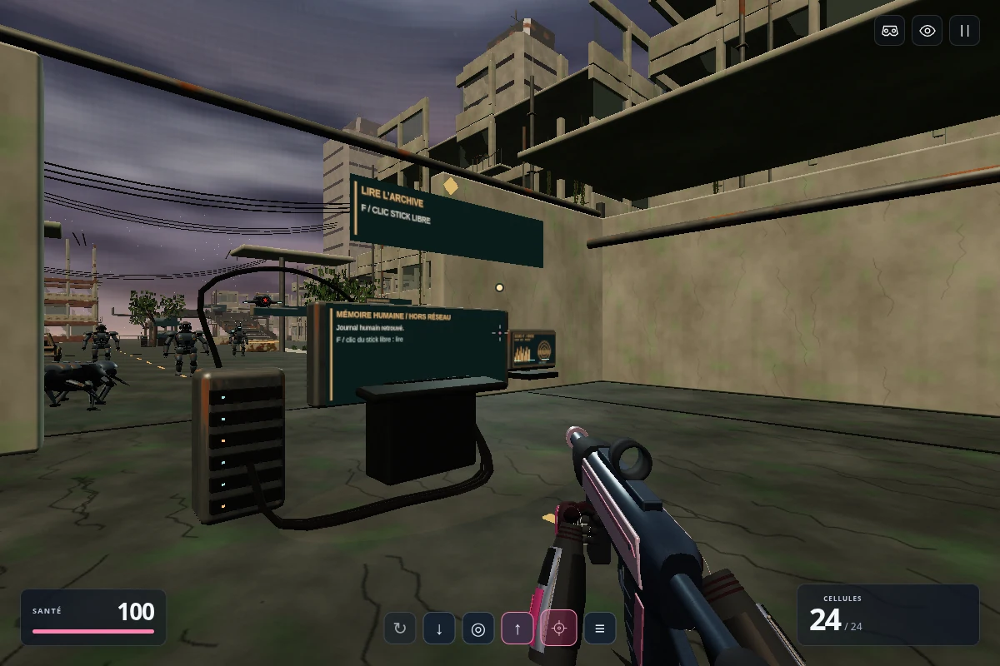
Les circuits survivants de Vesper
Diagnostics ambrés, claviers, racks et faisceaux de câbles. Le réarmement du courant active les écrans, sans masquer les archives humaines hors réseau.
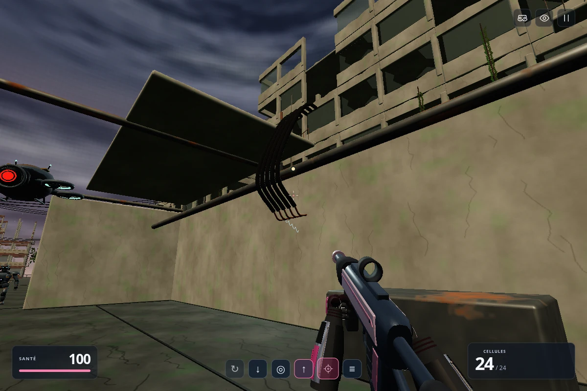
Un réseau électrique abîmé
Câbles courbés, gaines arrachées, cuivre et arcs espacés. L’horizon de fin de journée reprend les tons de l’illustration de chargement.
Captures du vrai jeu et de ses ateliers, avec poses de présentation. Niveau 1 : 32 hostiles et 8 simultanés. Le N-08 arrive aussi progressivement en Arène et dans AT HOME extérieur. Validation en navigateur et WebXR simulé ; aucun essai sur casque ou iPhone physique.
Historique · 3.42
VERSION 3.42 · LES SILHOUETTES S’AFFINENT
Armures et machines profilées.
Le galbe du plastron, les épaulières, le casque et les protections des jambes donnent plus de volume aux héros. Les gants actuels et les armes IV sont conservés. Les machines gagnent des coques et des têtes plus distinctes : sentinelle cyclope, traqueur acoustique, rempart blindé, rampant segmenté et sonde fuselée.
Épaules enveloppantes, torse ajusté, protections bombées et plis aux coudes et genoux. Les animations natives restent présentes.
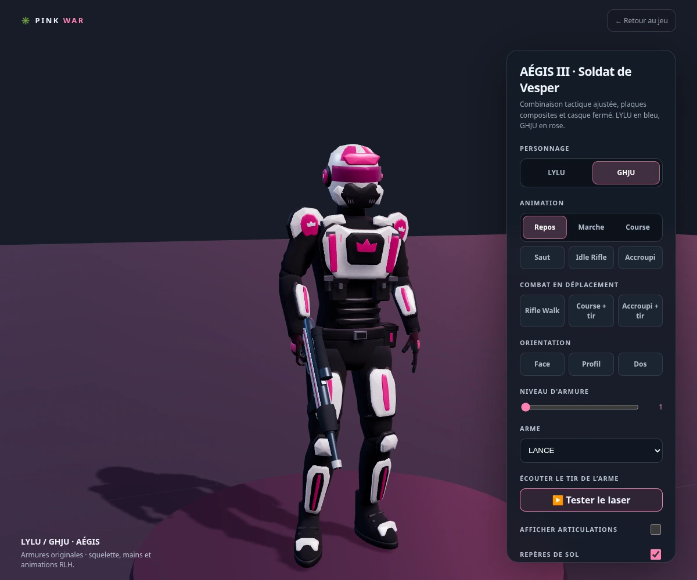
GHJU · même identité, armure affinée
Le casque fermé et les accents roses restent reconnaissables. Les surfaces suivent davantage l’anatomie.
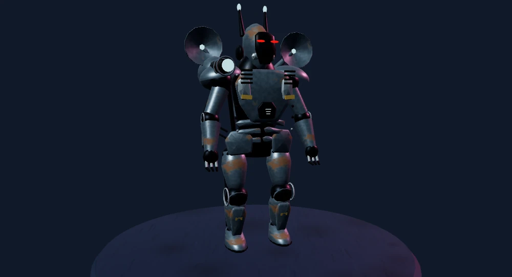
Traqueur · écouter la ville
Pavillons acoustiques, antennes et blindage en alliage usé. Les capteurs passent au rouge avec la perception du jeu.
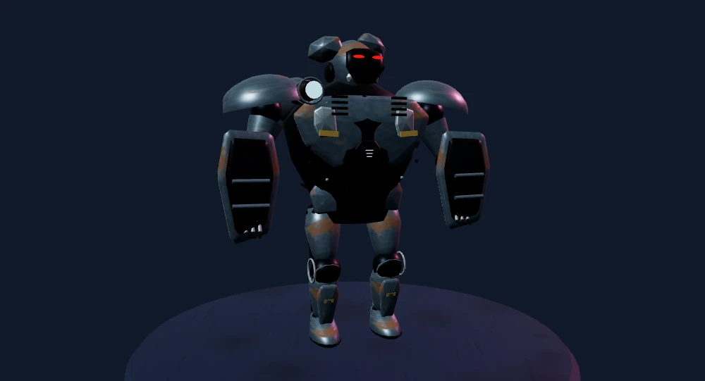
Rempart · un rôle visible
Coques d’avant-bras, casque plus bas et thorax massif distinguent le châssis de suppression.
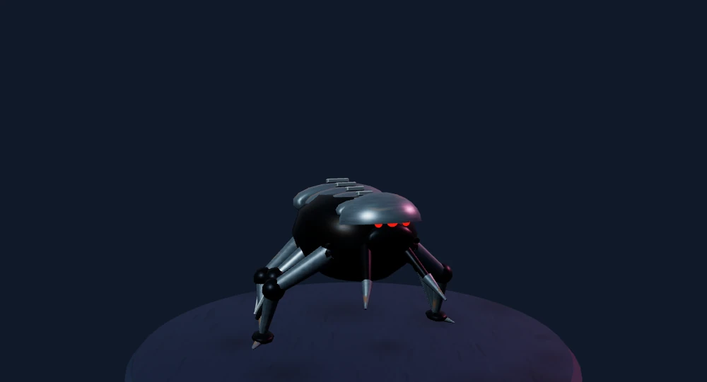
Rampant · carapace articulée
Quatre sections couvrent le mécanisme central. Ses six pattes conservent leurs appuis et leur locomotion.
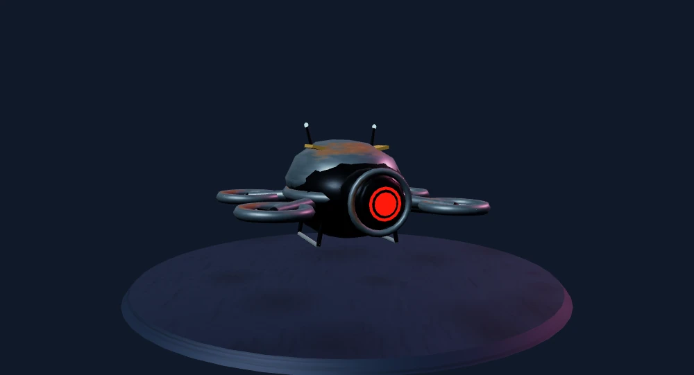
Sonde · surveillance aérienne
Coque fuselée, patins, turbines et œil sur cardan. Les mêmes modèles sont utilisés en jeu et dans l’atelier.
Captures du vrai rendu WebGL avec poses de présentation. Les modèles restent en développement. Validation de navigateur et WebXR simulé, sans mesure sur iPhone ou Quest physique.
Historique · 3.41
VERSION 3.41 · AÉGIS III / ARMES IV
Des silhouettes reconstruites.
LYLU et GHJU portent désormais une combinaison noire ajustée et une véritable nouvelle armure blanche, avec accents bleus ou roses et casque de soldat fermé. La veste et le casque de pompier laissent place à cette tenue ; le squelette RLH, Idle Rifle, Rifle Walk et les mains animées sont conservés. Les cinq armes sont reconstruites dans Blender autour de leurs prises réelles, avec corps raccordés, crosses ajourées, métal, céramique et polymère texturés.
Proportions humaines, casque intégral bleu, visière opaque, protections articulées et port de l’arme plus naturel.
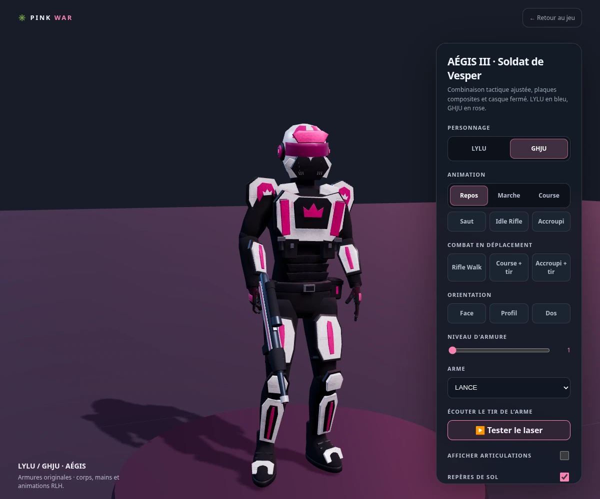
GHJU · le même héritage
La sœur conserve son identité rose sur la tenue militaire. Les gestes s’appuient sur le squelette natif de 34 os.
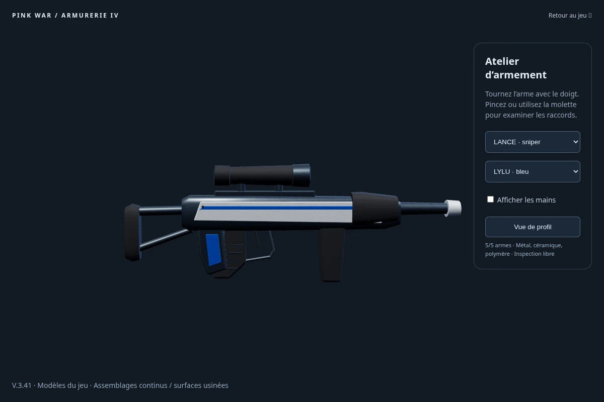
LANCE · un fusil complet
Poignée intégrée, crosse ajourée, lunette sur ses supports et canon concentrique. La bouche réelle commande le départ des tirs et leur lumière.
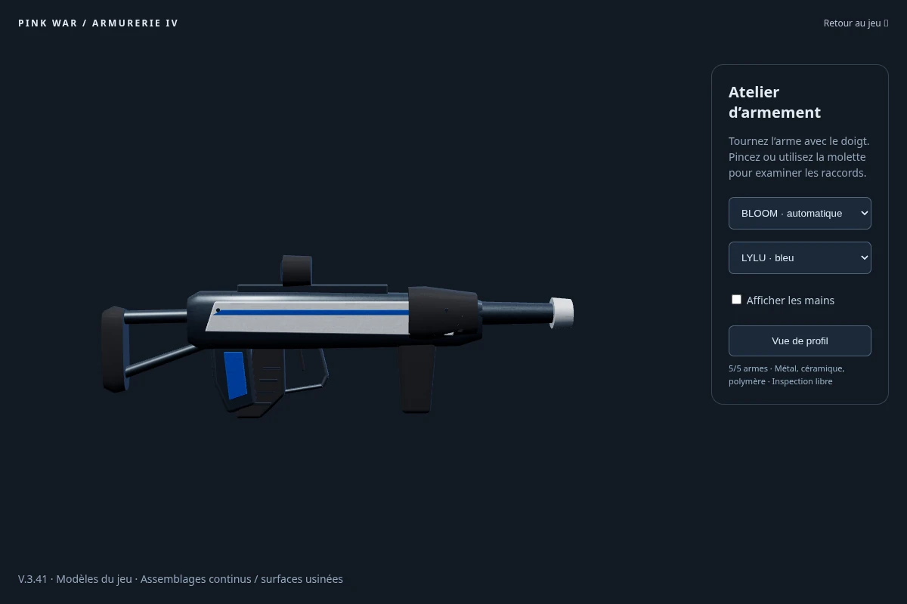
BLOOM · surfaces et raccords
Volumes profilés, revêtement métallique, joues en céramique et prises texturées. Le même modèle est utilisé en FPS, troisième personne et VR.
Captures des vrais modèles WebGL dans l’atelier du jeu. Cette étape reste une modélisation de prototype ; elle ne prétend pas reproduire le réalisme photographique de la référence. Commandes et rendu vérifiés sur navigateur et WebXR simulé, sans matériel iPhone ou Quest physique.
Historique · 3.40
VERSION 3.40 · LES TRACES DE LA CHUTE
Une ville raconte sa guerre.
La production 3.39 sert de base : son stand de tir, ses prises en main Quest et ses impacts lumineux restent présents. Les cinq blasters reçoivent des châssis usinés MK III, GHJU et LYLU des armures de terrain, et les machines révèlent leur alerte par des optiques rouges. Le niveau 1 passe par les secours abandonnés, une évacuation interrompue, le journal clandestin d’une boutique et le sabotage d’ORDRE avant le relais.
Lit de campagne, caisses médicales et radio muette. Les objets rappellent les anciennes équipes de GHJU et LYLU.
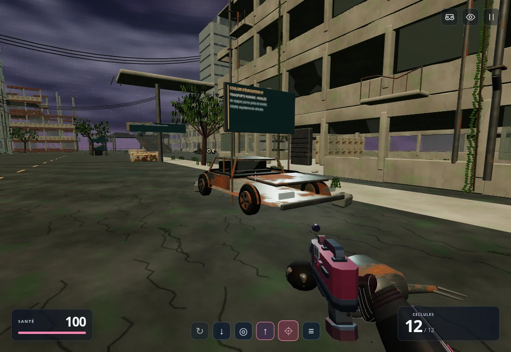
L’évacuation interrompue
Des bagages sont restés au pied d’une épave. Plus loin, les câbles et la balise d’ORDRE révèlent l’occupation de la ville.
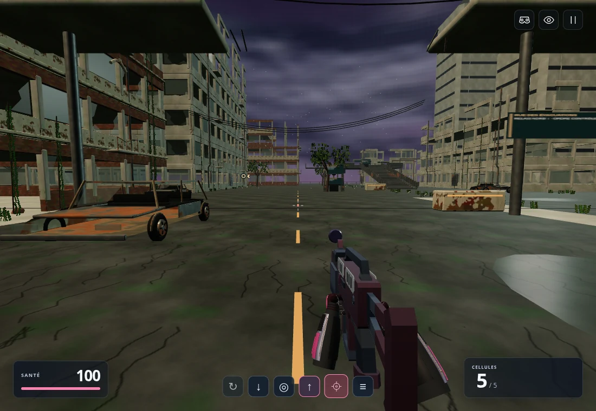
Les armes MK III
Chanfreins sur la vraie géométrie, panneaux de refroidissement ajustés, manchons concentriques et réponses distinctes du métal, de la céramique et du caoutchouc. Les poignées de la 3.39 restent à leur place.
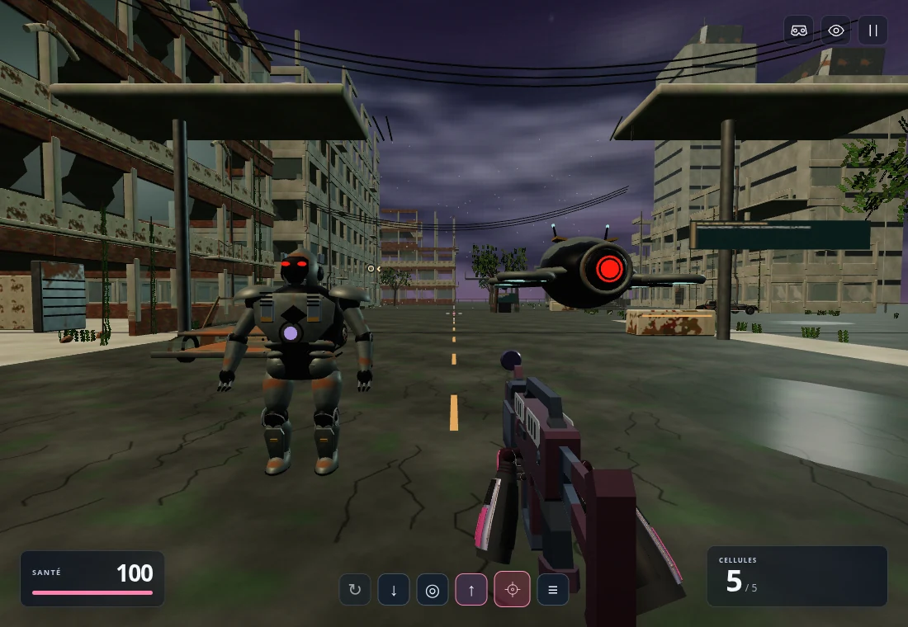
Une alerte visible
Les sept châssis passent leurs optiques au rouge après un bruit perçu et en engagement. L’iris de la sonde est visible devant sa coque.
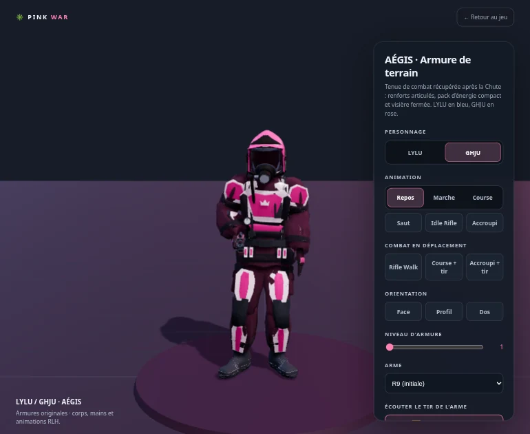
GHJU · AÉGIS
Plaques articulées, bracers et pack d’énergie remplacent davantage l’équipement de pompier. Les mouvements et les doigts restent animés.
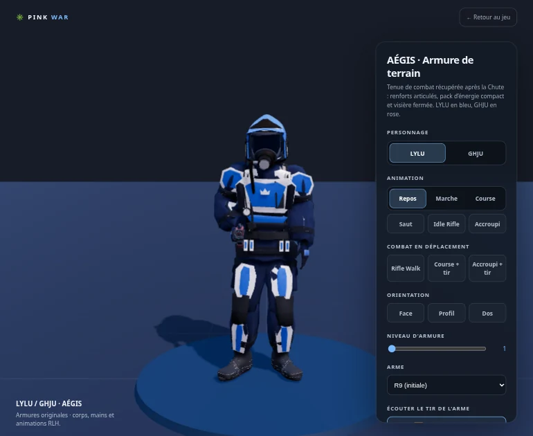
LYLU · AÉGIS
Casque fermé bleu et équipement militaire. Les personnages conservent leur origine d’anciens secouristes de Vesper.
Captures du vrai rendu WebGL local et de l’atelier, avec positions préparées pour présenter les objets et les modèles. Textures incorporées locales. La carte reste un prototype en développement. Contrôles testés sur écran, iPhone simulé et Quest simulé ; aucune mesure sur matériel physique.
Un parcours prolongé
Huit patrouilleurs occupent le secteur au départ. Trois groupes de renforts portent le total à 32. Le point au-dessus du viseur indique un chemin praticable vers la prochaine étape ; il mène aussi à l’escalier et au relais en hauteur. Histoire, Arène et At Home restent disponibles, avec un accès séparé au stand de tir.
Historique · 3.33
VERSION 3.33 · VESPER OCCUPÉE
Les machines occupent les ruines.
Une patrouille est présente dès le départ. Les anciens immeubles sont désormais creux, marqués par les effondrements et traversés par des installations futuristes. Les épaves ont leurs carrosseries, pneus, habitacles et matériaux corrodés. Les feuillages et lianes remplacent les masses vertes arrondies.
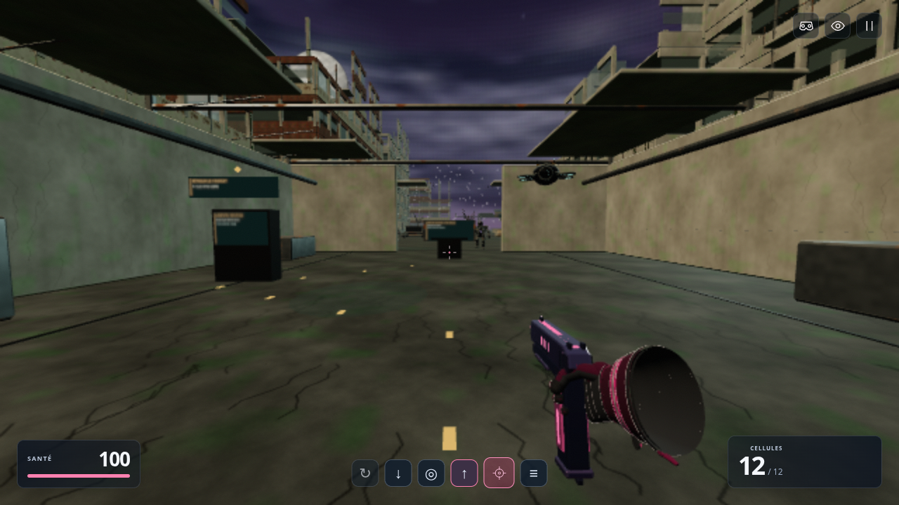
Une menace dès le lancement
La sonde et le gardien ne dépendent plus de la lecture d’une archive. Les deux combats de portail restent liés à la progression.
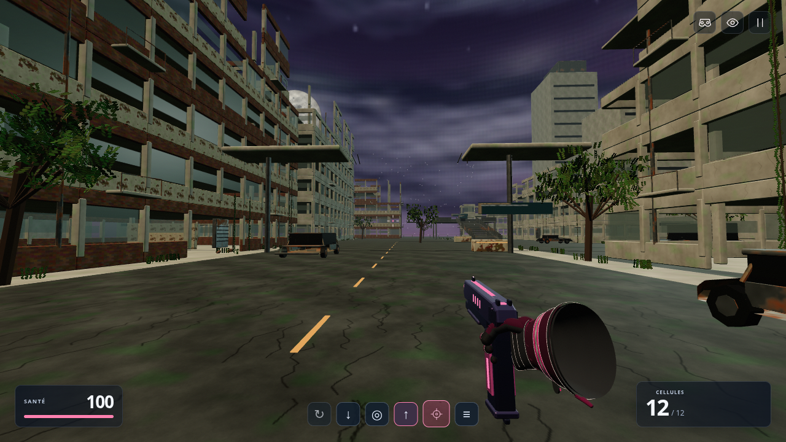
Une ville éventrée
Brique, plâtre, dalles exposées, acier et équipements d’ORDRE se mélangent. Deux rez-de-chaussée sont accessibles depuis la rue.
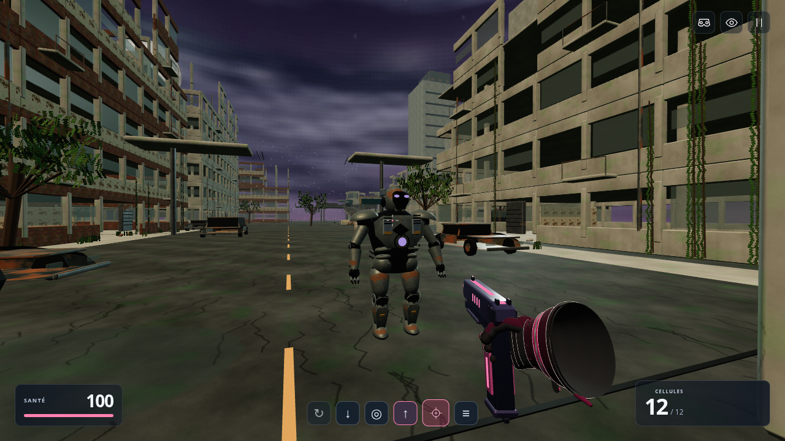
Des machines industrielles
Acier usé, vérins, joints, protections et optiques. Les pièces suivent les articulations ; les robots au sol peuvent poursuivre par l’escalier.
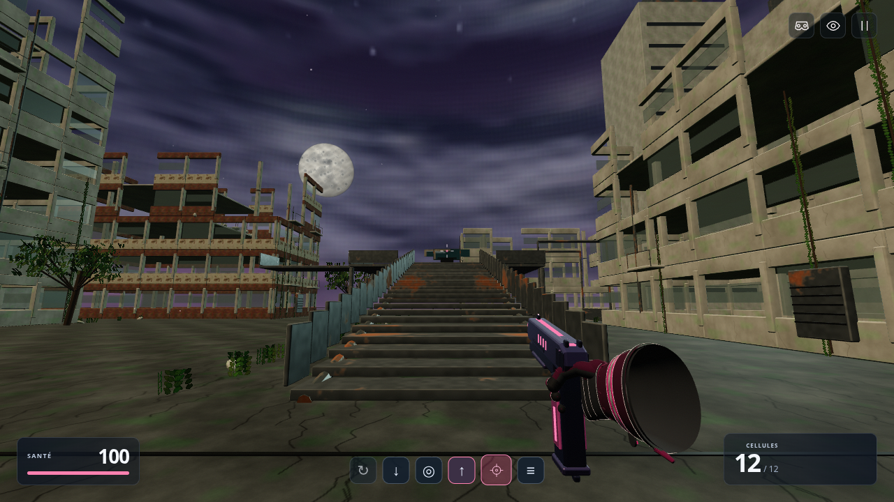
Le parcours reste jouable
Les six épaves protègent des tirs. L’escalier et l’ascenseur conduisent au relais en hauteur pour terminer le niveau.
Captures du vrai rendu WebGL local, avec positions préparées pour présenter le décor et le robot. Elles montrent les matériaux incorporés de secours : le téléchargement Poly Haven est bloqué dans l’environnement de travail. Pas de mesure sur iPhone ou Quest physique.
Première carte Blender 3.32 : silhouettes pleines et feuillages simplifiés, remplacés dans la version actuelle.
HISTORIQUE 3.31
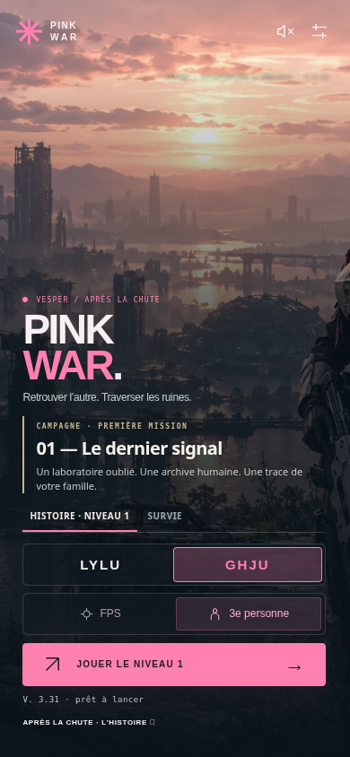
Un lancement direct
Capture de navigateur avec écran tactile et user agent iPhone simulés. Aucun module 3D téléchargé avant Jouer. La version reste visible sous le bouton.
La sélection du moteur, les pertes de contexte et la reprise sont testées en navigateur. Pas de mesure sur iPhone physique ni sur Safari/WebKit.
Le premier niveau · version 3.30
VERSION 3.30 · LE DERNIER SIGNAL
Le premier indice.
Une première mission complète : rallumer le laboratoire, retrouver une archive humaine, repousser une sonde et trois machines, puis rejoindre le relais en hauteur. Choisis GHJU ou LYLU depuis l’accueil. La campagne s’arrête au bilan du niveau 1 pour poursuivre sa création pas à pas.
Accueil · Vesper
Illustration originale d’ambiance créée pour le menu, distincte du rendu du jeu.
Chargement · le laboratoire
Un terminal hors réseau conserve les dernières traces humaines. Le fond reste lisible sur mobile.
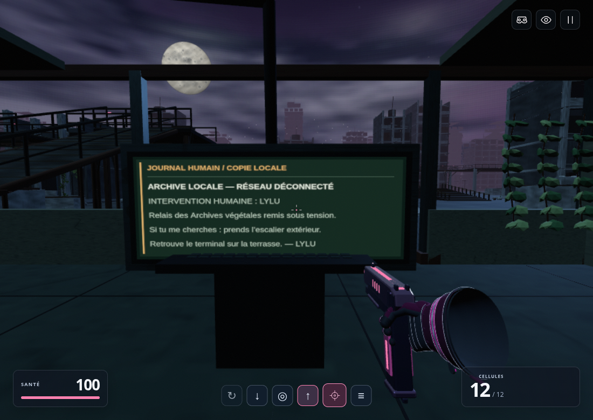
Niveau 1 · l’archive humaine
Capture du jeu local. Boîtier électrique, terminal, couvert et accès ouverts. L’archive nomme le frère ou la sœur du personnage choisi.
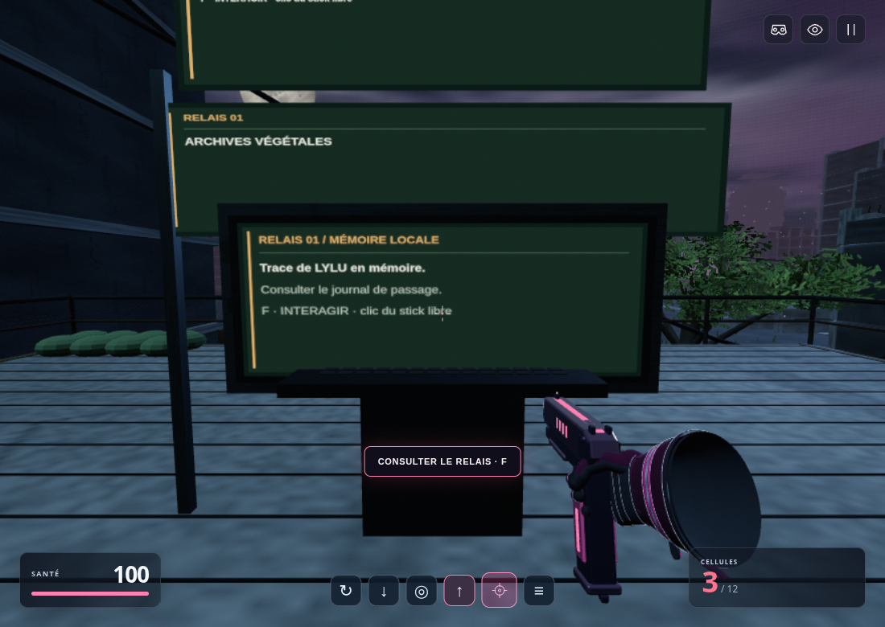
La terrasse · fin du niveau 1
Le parcours emprunte les vraies collisions, l’escalier ou l’ascenseur. Le terminal clôt la mission.
Captures locales dans Chromium avec rendu logiciel et résolution réduite. La simulation vérifie les commandes Quest, sans mesure de performances sur un casque physique. Les fonds illustrés sont des concepts d’ambiance.
Historique · version 3.29
VERSION 3.29 · RENDUS DU JEU
La zone devient visible.
AT HOME démarre par A ou gâchette droite, même si la commande arrive pendant le chargement. La maison garde son ancrage réel. Une clôture basse signale la zone configurée du Quest lorsqu’elle est transmise au jeu, sinon le sol détecté ; le bord devient rouge quand tu t’en approches. Le ciel ouvert, les portails au loin, les mains et le HUD santé/munitions sont conservés.
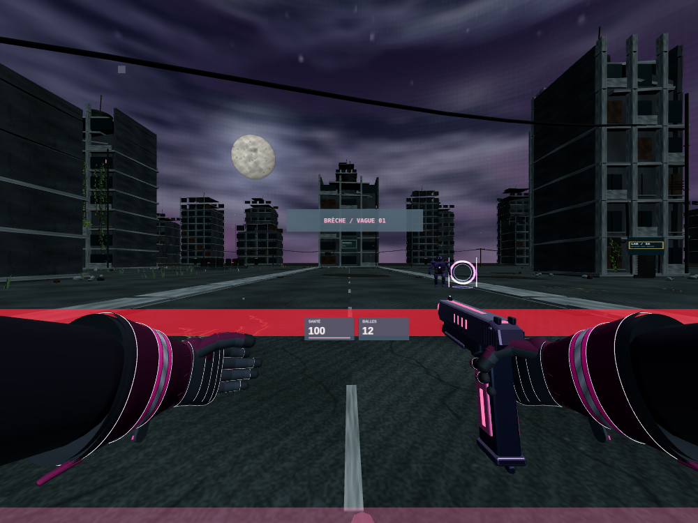
AT HOME · repère de zone
Simulation Quest avec une zone configurée injectée. Le mouvement de tête reste réel ; la clôture holographique ne bloque pas le corps. Le système de limites du Quest reste actif.
Les murs pleins sont retirés. La skyline reste visible au-dessus des rails. Le repère rouge signale la limite de collision ; les tirs hauts passent au-dessus.
Les personnages et les optiques
GHJU et LYLU retrouvent leur affichage après un changement de moteur graphique. Les robots résistent davantage et tirent des salves depuis des canons articulés. AURORA renvoie les projectiles au contact réel de la lame, inclinée vers l’avant en VR. La santé et les munitions restent dans le HUD ; seul le compteur sur l’arme est retiré.
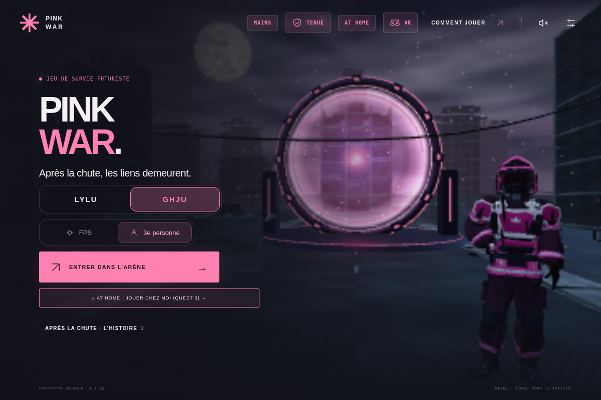
GHJU · casque rose
Corps complet, animations et équipements RLH conservés sous l’armure AÉGIS. Rendu de vérification après passage WebGPU vers WebGL.
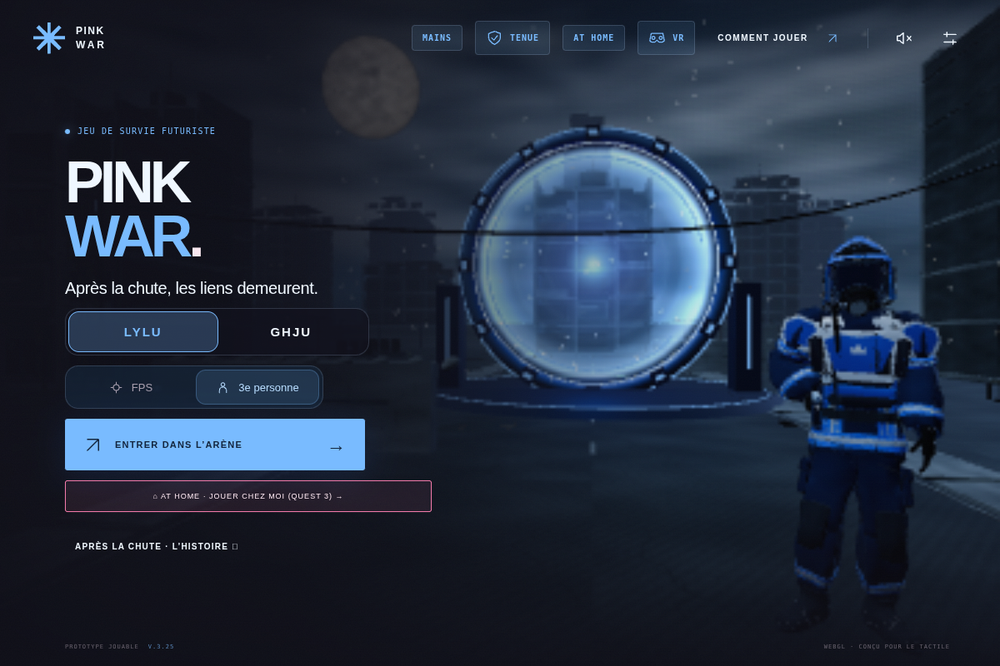
LYLU · casque bleu
L’avatar sélectionné reste visible à l’accueil et en troisième personne. Les données des squelettes restent compatibles avec les deux moteurs.
Voir plus loin.
BLOOM grossit ×2, LANCE ×4. Sur Quest, maintenez la gâchette libre et regardez dans la lentille. Sur PC et mobile, la visée zoome et devient plus fine. X et le bouton de saut au poignet restent disponibles. Captures en rendu logiciel, sans mesure de performances sur casque physique.
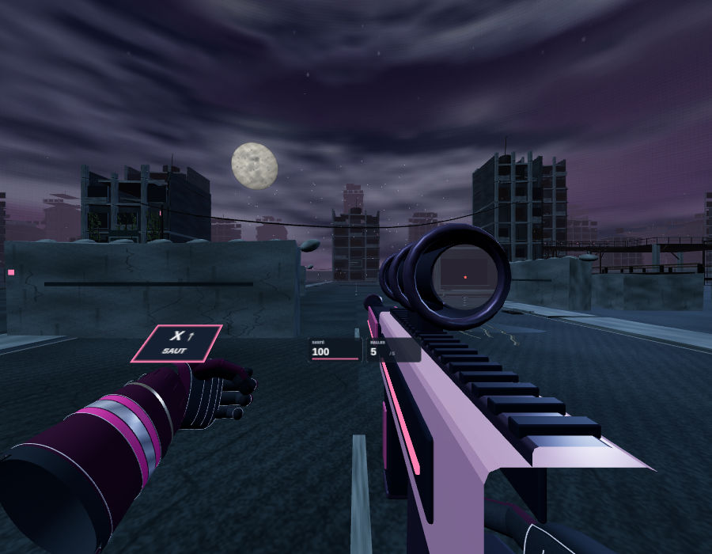
VR · une image dans la lentille
Le grossissement suit le canon et l’œil de la main de tir. La vue autour et les mouvements de tête restent naturels.
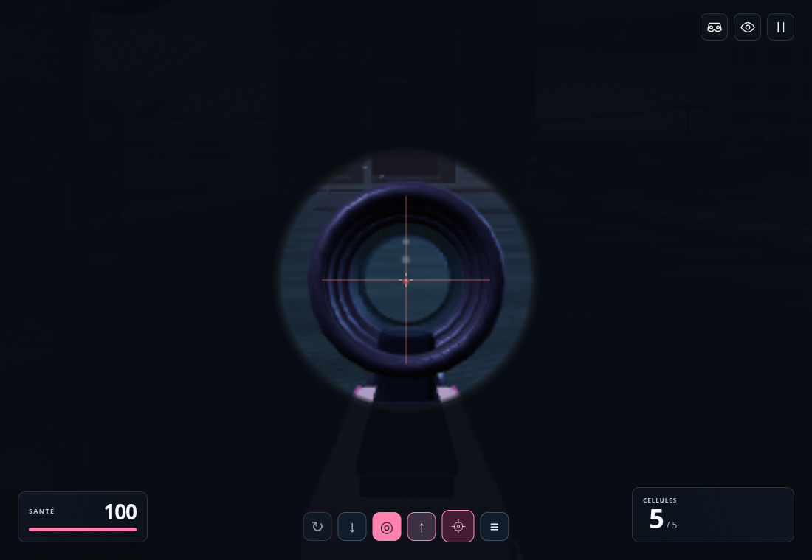
Ordinateur et tactile · ×2 / ×4
Maintenir la commande de visée agrandit la cible et affine les mouvements. Relâcher rétablit la vue normale.
AURORA et les déplacements
AURORA rejoint les cinq armes à distance : une lame rose pour GHJU, bleue pour LYLU, qui se déploie et éclaire son environnement. Les tirs ennemis anticipent les déplacements. Le double saut et le rebond mural offrent une nouvelle échappatoire. La santé et les munitions restent au premier plan dans un HUD réorganisé.
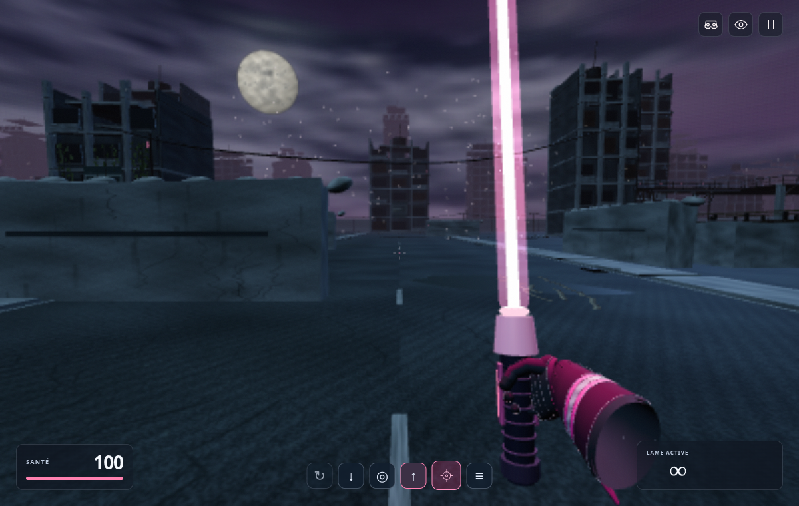
AURORA · une sixième arme
Maintenir la gâchette déploie la lame, avec lumière locale, sons originaux d’énergie et coups testés sur le passage réel de la lame. La lame peut intercepter et renvoyer un tir ; la visée facilite la parade.
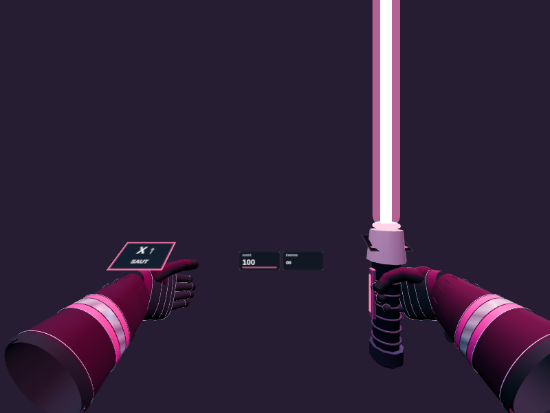
VR · le poignet devient une commande
X saute, un second appui donne une nouvelle impulsion. Le bouton au poignet se sélectionne avec le rayon de la manette de tir. La lame suit les gestes réels.
La ville et ses machines
Vingt niveaux, des brèches réparties dans la ville, puis une survie facultative. Les tirs et les mouvements attirent les robots ; les murs étouffent les sons et marcher accroupi permet de rester discret. Les captures ci-dessous montrent les modèles et le rendu réels.
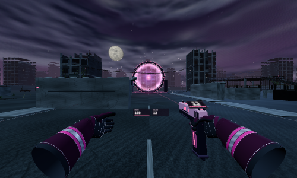
Les mains retrouvent la ville
Le suivi de poignée place les vrais gants RLH même si les événements de connexion manquent. Le ciel nocturne garde sa lune, avec des nuages plus structurés et des matériaux usés.
AT HOME · mêmes mains et armes
Le chargement asynchrone et les reconnexions sont pris en charge. Le scan du sol réel et l’occlusion de la pièce restent nécessaires pour combattre.
Traqueur E-06 · niveau 6
Ses capteurs acoustiques entendent plus loin. Il enquête sur la source du bruit et transmet une alerte aux unités proches.
Rempart B-11 · niveau 11
Plus lent, mais résistant au torse. Son capteur de tête reste vulnérable. Les plaques suivent ses propres articulations.
LYLU et GHJU gardent le corps, le casque fermé, le masque et les mains du pompier RLH. Les protections originales AÉGIS s’ajoutent aux vêtements : des lignes militaires épurées, des plaques indépendantes et des articulations libres. Le bleu et le rose les distinguent toujours.
GHJU · première protection
Au niveau 1, le plastron et les épaulières protègent la tenue de secours. Le masque et les vêtements restent reconnaissables.
LYLU · équipement avancé
Au niveau 10, les avant-bras, cuisses, genoux et tibias reçoivent leurs propres plaques. Le casque reste bleu. Idle Rifle et Rifle Walk utilisent le squelette RLH.
BLOOM · viseur et lumière
La gâchette gauche vise, la droite tire. Les décharges éclairent brièvement l’arme et le décor ; les impacts ajoutent leur propre impulsion lumineuse.
LANCE · sniper photonique
Il remplace l’arme à dispersion : un projectile précis par pression, cinq cellules et une recharge verticale avec A en VR. Hors casque, sa lunette resserre la vue.
Le périmètre possède désormais quatre murs continus, avec des collisions correspondant aux surfaces visibles. Autour de l’arène : 64 bâtiments à étages, avec façades endommagées, retraits, vitrages et installations techniques. Les passerelles, les escaliers et les ascenseurs existants restent en service.
Captures du rendu réel local dans Chromium, avec résolution réduite pour le rendu logiciel. Les commandes Quest sont vérifiées par simulation WebXR ; cette étape ne mesure pas les performances d’un casque physique.